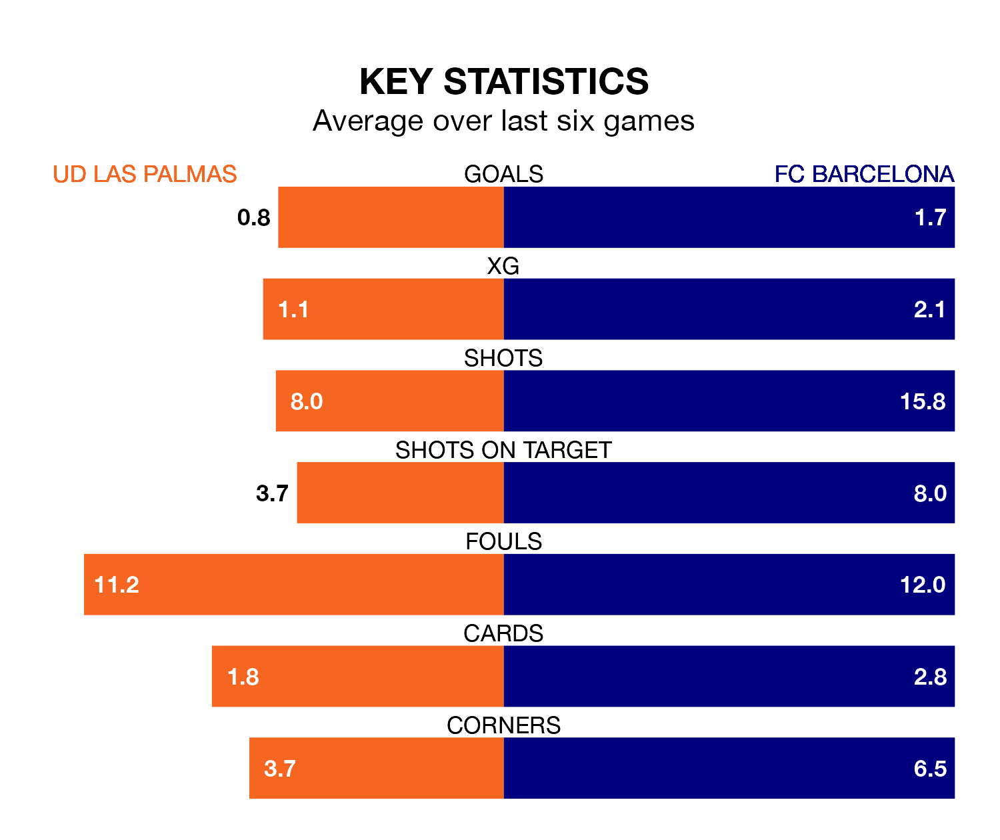

FC Barcelona face a challenge to maintain their high-scoring form away against a tight UD Las Palmas defence on Thursday.
With 34 goals in 18 games, Barcelona are the joint-fourth-highest scorers in La Liga ahead of the 8.30pm kick-off at Estadio de Gran Canaria.
They face an UD Las Palmas side who have scored 15 in 18 matches, but conceded only 15 goals, putting them second among the league's tightest defences – only Real Madrid have conceded fewer goals.
Barcelona are fourth in the table after 18 games, of which they have won 11 and drawn five, earning 38 points.
Las Palmas are six places behind Barça in 10th, with seven wins and four draws putting them on 25 points.
With Marc-André ter Stegen between the sticks, FC Barcelona can rely on one of the league's safest pair of hands. He has kept six clean sheets in his 13 appearances this season in La Liga.
In UD Las Palmas's net, Álvaro Vallés has four clean sheets in 18 games.
The home team are in mixed form in La Liga, with two wins and two draws from their last six games.
With three wins and two draws over that period, the visitors' form is better – they have taken 11 points from 18, compared to Las Palmas's eight.
Las Palmas's last match was on December 20, a 1-0 loss against Athletic Club Bilbao.
Barcelona beat Almería 3-2 last time out, also on December 20, with Sergi Roberto (two) and Raphinha on the scoresheet.
Thursday's match will be refereed by Pablo González Fuertes, who has taken charge of 10 La Liga games so far this season, issuing two red cards and booking 34 players. He has awarded five penalties.
He is yet to oversee a match featuring either Las Palmas or Barcelona this season.
Updated: 10:36, 03/01/24